Операционные системы. Часть 3 — «Установка Arch Linux» 🚀¶
В прошлых сериях мы уже наколдовали флешку с Arch (или целый Ventoy‑мультизагруз) и слегка потроллили культ «только GUI» 😏
Самое время поставить лучшую ОС всех времён и народов, сделанную людьми для людей. Да, я про Arch 🖤🐧
🧭 План действий¶
- Подготовим носитель и проверим сеть.
- Обновим
archinstallв live‑среде (на флешке он часто старый). - Пройдём установщик: диски, btrfs, загрузчик, профиль, пакеты.
- Перезагрузимся и доведём GRUB до ума (чтоб видела «винду»).
По пути — скриншоты и комментарии автора, местами с фирменным ворчанием 🙃
🖥️ Подготовка¶
-
Записываем ISO Arch Linux с archinstall. У меня — Ventoy с набором ISO (и да, рядом валяются две помойки: Windows 10 и Windows 11 — пригодятся для дуалбута).
-
Если нужен дуалбут, сначала ставим Windows — так меньше геморроя.
-
В Windows открываем Disk Management и сжимаем раздел, чтобы освободить место под Arch. Если Arch пойдёт на отдельный SSD — просто оставляем его пустым.
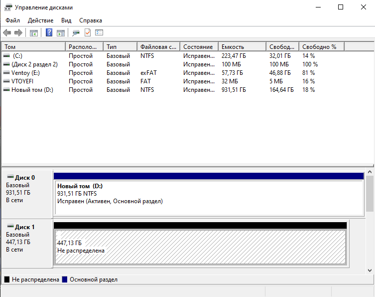
-
Windows должна быть в GPT (не MBR)! Если у тебя MBR — конверти в GPT:
mbr2gpt /convert /allowFullOS -
Проверь BitLocker / Device Encryption. Либо отключи, либо выпиши 48‑значный ключ восстановления и положи в карман (прямо физически — на бумажку). Иначе велика вероятность встретить блокировку загрузчика после установки Arch 🤡
-
Грузимся с флешки: в BIOS/UEFI выбираем USB‑носитель → попадаем в live‑среду.
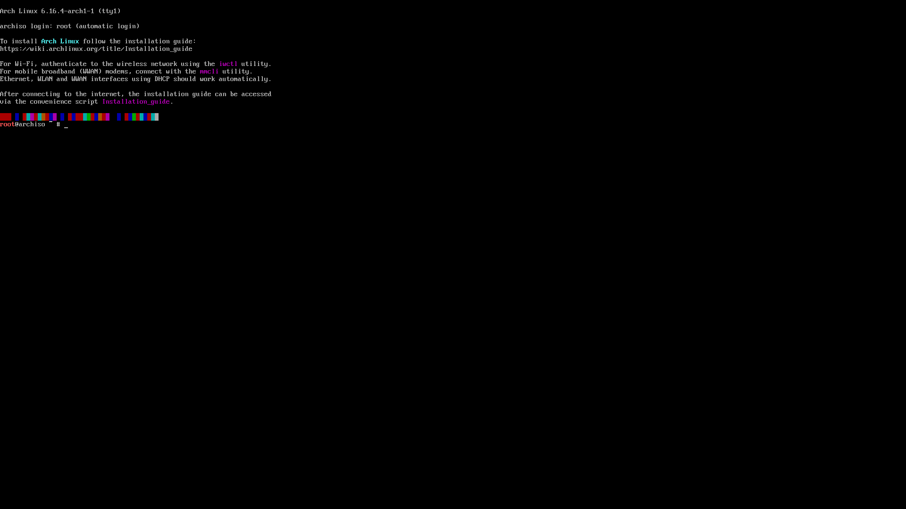
-
archinstall — официальный полуавтоматический установщик Arch. Да, можно и «по‑взрослому» руками, и даже одной командой… но я не мазохист (хотя после >10 установок есть соблазн, не скрою).
-
Проверяем интернет:
ping -c 3 8.8.8.8Если по проводу всё ок — кайф. Если Wi‑Fi — цепляемся через
iwctl.iwctl station wlan0 scan station wlan0 get-networks station wlan0 connect "MyWiFi" --passphrase "supersecret" exit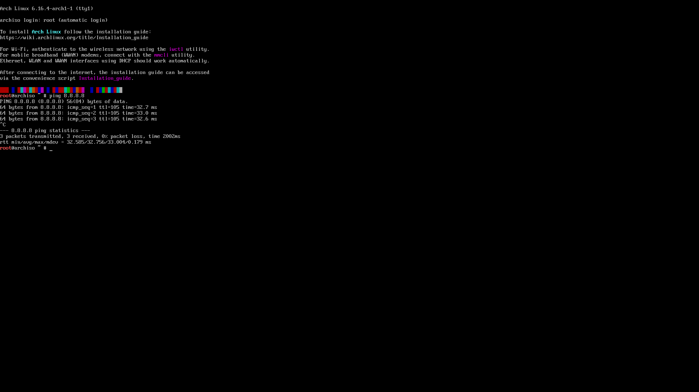
-
Ключи pacman (на всякий случай) — инициализация и наполнение:
pacman -Sy archlinux-keyring pacman-key --init pacman-key --populate archlinuxБез живых ключей пакеты ставиться не будут. Не будет пакетов — не будет счастья 🙂
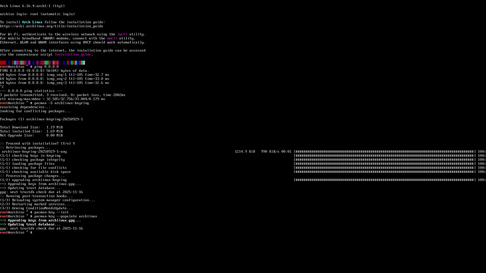
-
Обновляем archinstall (на ISO он часто древний):
pacman -Sy archinstallСтарые версии любят тянуть несуществующие пакеты — и узнаёшь об этом в самом конце установки. И кому это надо? 😑
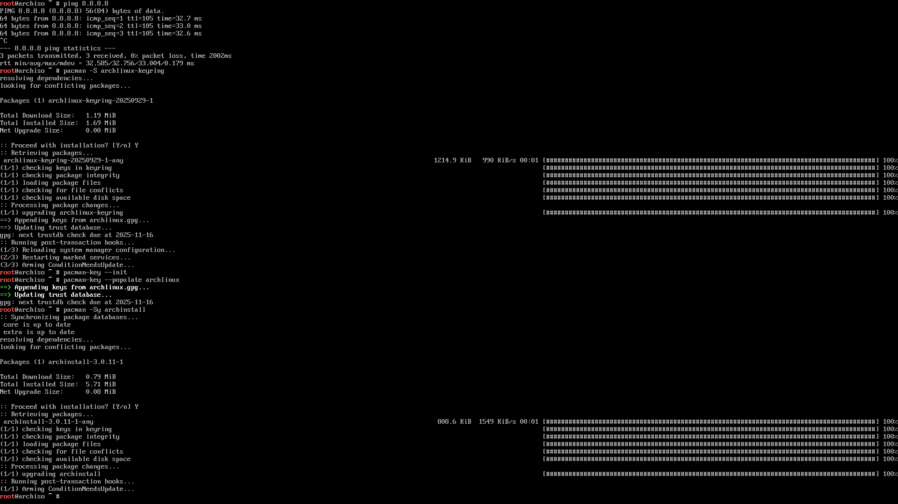
-
Стартуем установщик:
archinstall
⚙️ Установка через archinstall¶
-
Язык интерфейса — оставляем English.
-
Locales — пока только
en_US.UTF-8. Русский добавим после установки.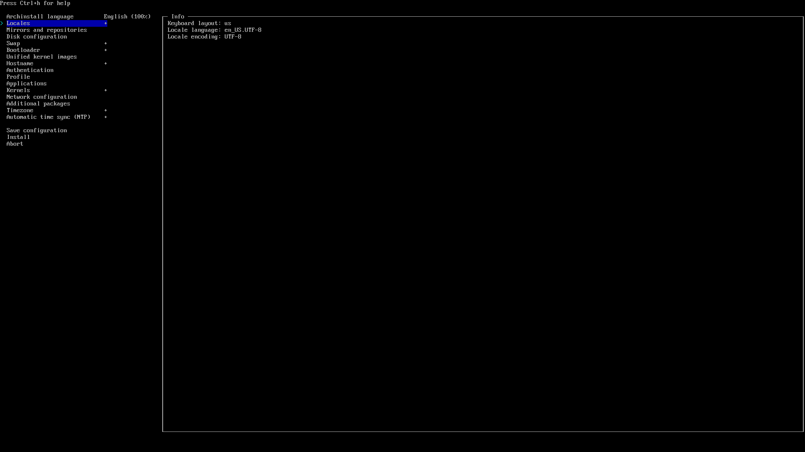
-
Mirrors — выбираем ближайший к тебе регион (у меня
/Russia).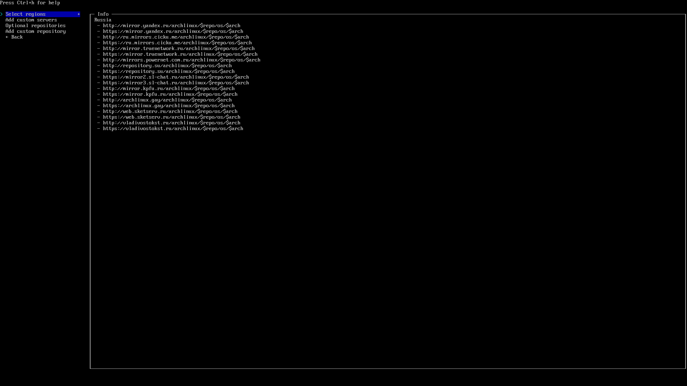
-
Disk configuration — тут можно и жизнь сломать. Сценарии:
- Только Arch на диске → Best‑effort default partitioning.
- Два диска (Windows и Arch раздельно) → выбираем пустой диск → Best‑effort.
- Один диск под дуалбут → заранее ужимаем Windows → в установщике берём free space → Manual Partitioning → создаем обязательные разделы вручную.
Для btrfs‑сетапа:
/boot— минимум 1 GB (не 100 МБ, прошу!)-
Под btrfs — набор субтомов:
@→/@home→/home@log→/var/log@pkg→/var/cache/pacman/pkg@.snapshots→/.snapshots

На скрине — тот самый свободный SSD Kingston. Жмём Suggest partition layout.
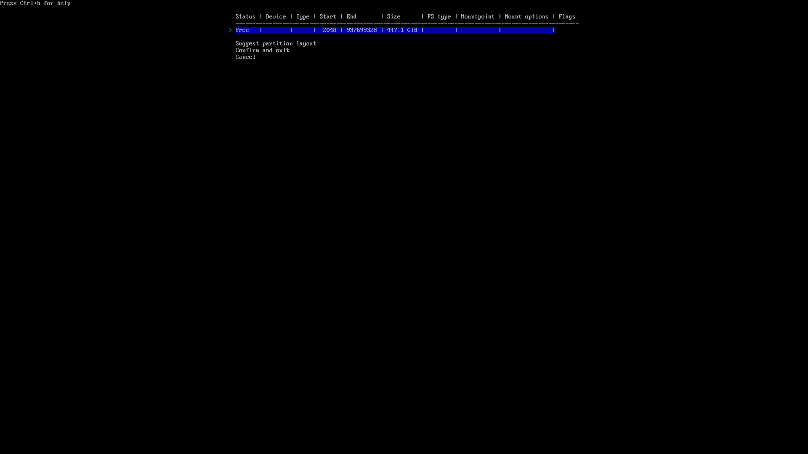
Файловая система: btrfs. Я уже давно на ней и доволен. Теорию и тюнинг — в отдельной статье. CoW отключаем.
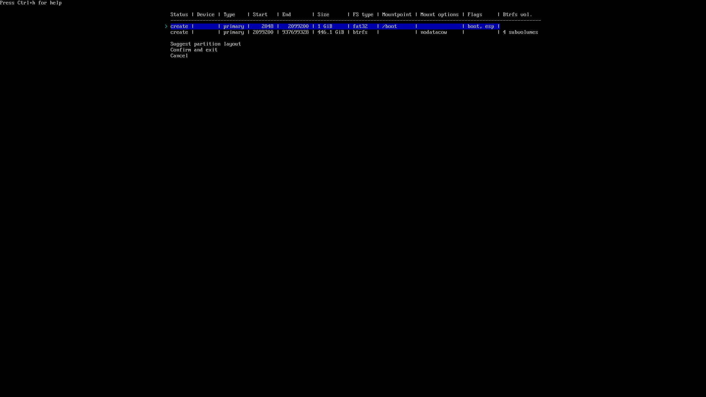
В итоге получаем примерно так:
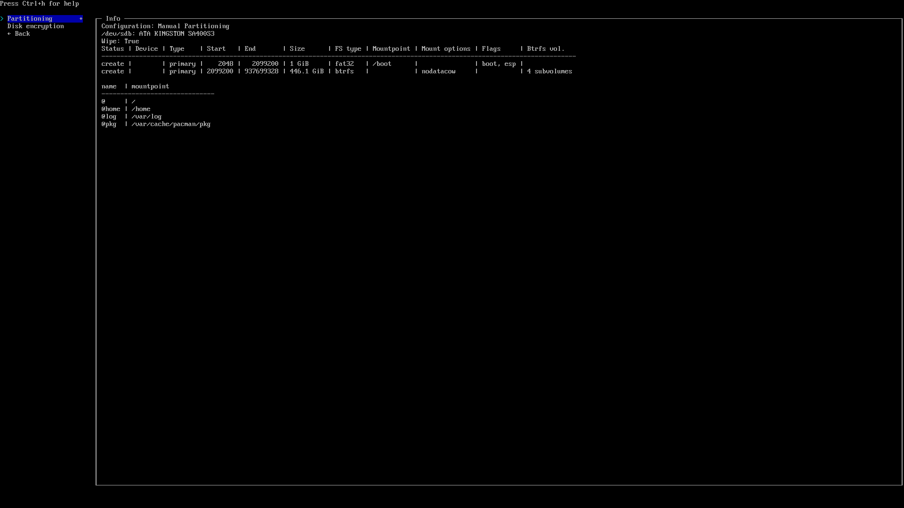
⚠️ Это самый тонкий шаг. Раньше он мне руинил установку или сносил «винду». Будь внимателен — читай, что пишет инсталлятор.
-
Шифрование диска — по желанию. Я не включаю.
-
Swap — включаем. Детальный тюнинг свапа/hibernation — потом.
-
Bootloader:
- Если Arch единственный — бери
systemd-boot. - Если дуалбут — GRUB и только.
systemd-bootв дуалбуте можно допилить, но я не горю желанием (целый день угрохал — безуспешно 😅).
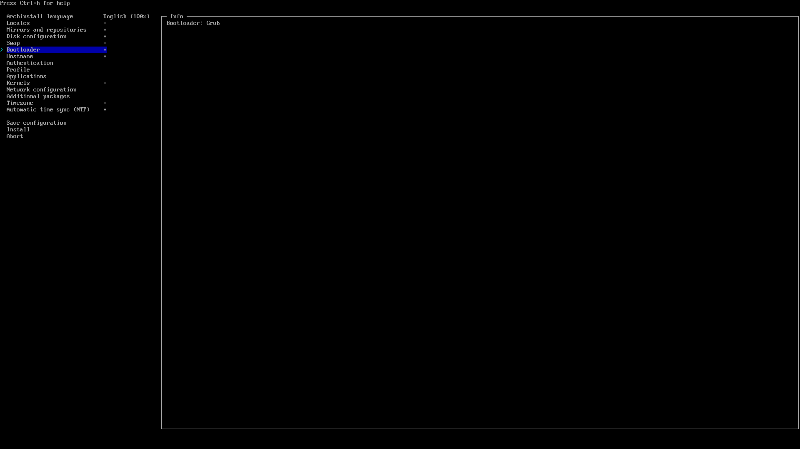
- Если Arch единственный — бери
-
Hostname — любое благозвучное. Это имя машины в сети.
-
Authentication — ставим root‑пароль, создаём обычного пользователя и даём ему sudo (в archinstall есть галка/опция). В Linux работаем только от юзера, привилегии — осознанно.
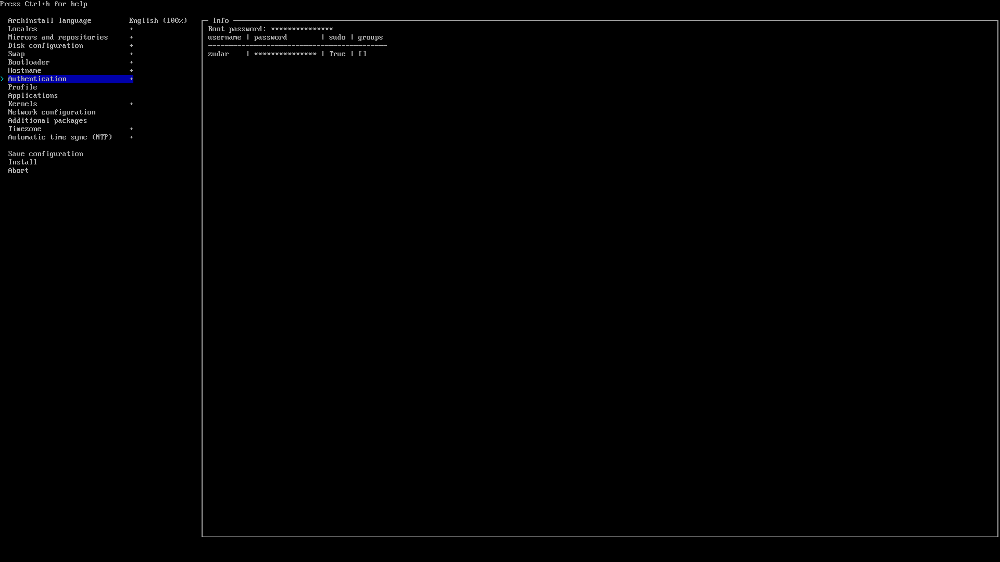
-
Profile — это стартовая сборка системы:
- Desktop → Hyprland (мой выбор).
- Polkit или seatd — беру polkit.
- Graphics driver — All open‑source (мы на светлой стороне).
- Greeter — ly (минималистично).
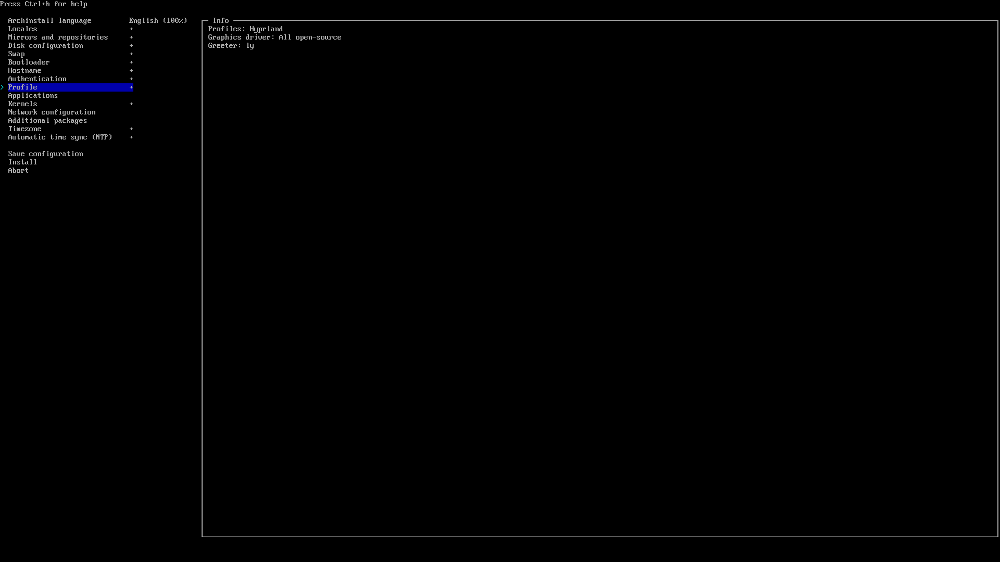
-
Applications → Audio → PipeWire — берём его, не
pulseaudio(тот уже на пенсии, да и косячил у меня).Bluetooth — по желанию, можно и потом настроить.
-
Kernels — вместо
linuxя люблюlinux-zen. -
Network configuration — «Copy ISO network configuration to installation». Ради этого интернет проверяли в начале.
-
Additional packages — для проверки ставлю
vim(ну а что, святое). -
Timezone — ставим
/Europe/Moscow(потом синхронизацию Windows/Arch настроим отдельно). -
NTP (Automatic time sync) — Enabled. Иногда сети чудят, и NTP не проходит — так и не разобрался почему. Надо пробовать от другой Wi-Fi сети.
-
Install → Yes и молимся Линусу Торвальдсу.
Диск форматнётся, побегут пакеты. У меня занимало 10–30 минут — зависит от канала и SSD.
-
Если что‑то крашнется (а
archinstallна Python, так что бывает), читаем логи — установщик предложит команду для выгрузки логов и даст ссылку. Открываем в браузере и анализируем. -
Готово! Можно зайти в установленную систему сразу из инсталлятора, или выйти в live‑среду, или просто перезагрузиться. В UEFI появится запись UEFI OS — её и выбираем.
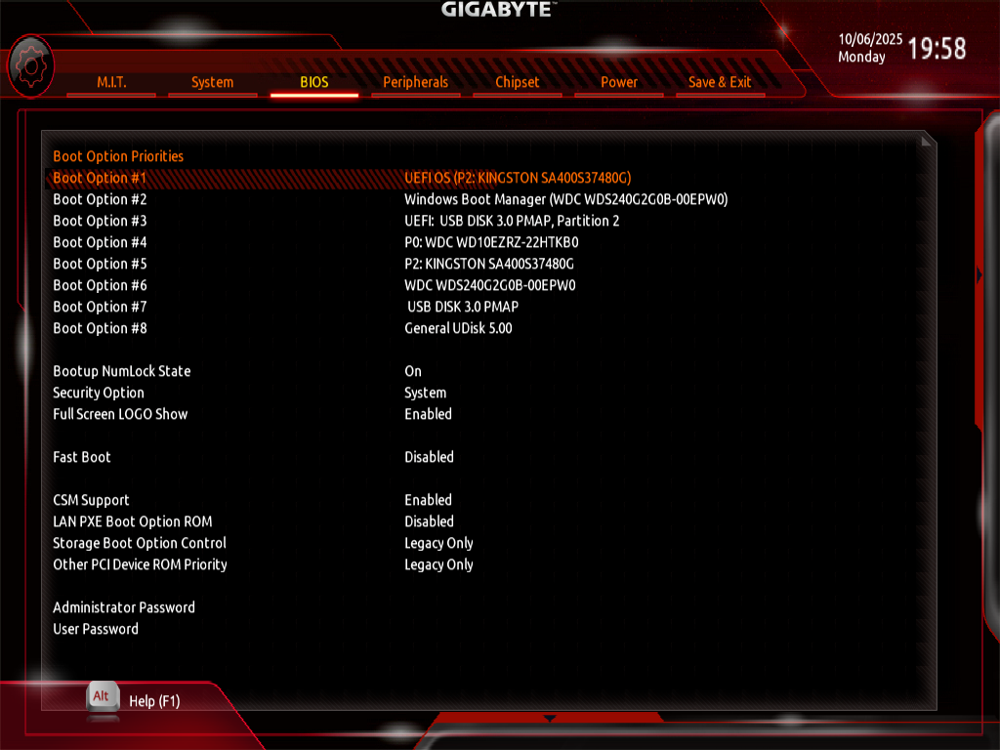
🧰 После перезагрузки: чиним GRUB и «винду»¶
-
Загружаемся. Видим GRUB, но в меню только Arch. Окей, пофиксим.
-
Входим в систему (ly → логин/пароль). Перед нами дефолтный Hyprland. Сверху — ворох ошибок конфига… нормально, разберёмся в следующей части. Сейчас главное — вернуть Windows в меню GRUB.
-
Обновим систему (на всякий случай):
sudo pacman -Syu -
Ставим и настраиваем os-prober:
sudo pacman -S os-prober sudo os-prober # проверяем, что видит Windows sudo sed -i 's/^#\?GRUB_DISABLE_OS_PROBER=.*/GRUB_DISABLE_OS_PROBER=false/' /etc/default/grub sudo grub-mkconfig -o /boot/grub/grub.cfgЗдесь он должен подтянуть загрузчик «винды».
-
Перезагружаемся:
sudo reboot nowПроверяем GRUB — выбираем Windows. Если стартует — победа 🎉
Что в итоге¶
Через archinstall установка проходит бодро и без шаманства, если аккуратно с дисками и загрузчиком. Эта инструкция написана после ~10 установок Arch 😅 (не уместить сюда всю боль, через которую я прошел) — косяков было много, но теперь у тебя есть проторенная дорожка.
Я перепробовал Debian, ElementaryOS, Fedora (фу), Ubuntu (фу ×2), i3, GNOME (говно), KDE (тоже говно). В итоге осел на Arch + Hyprland (через HyDE) — самое простое и удобное для меня. В планах попробовать NixOS (сложнааа) и CacheOS (Arch‑based).
Всем спасибо за внимание! Добра и арча в дом! ✌️ :3
Дальше — больше¶
В следующей статье: настройка Arch Linux после установки — софт, Hyprland, шрифты, раскладки, конфиги